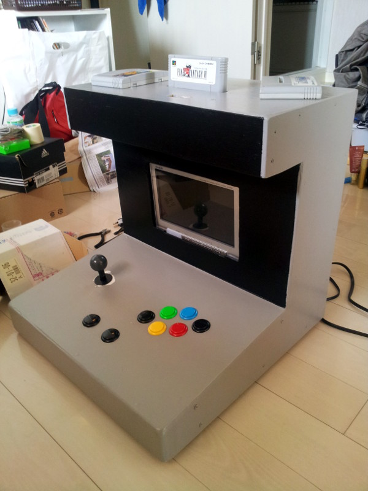
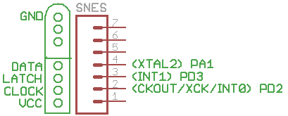
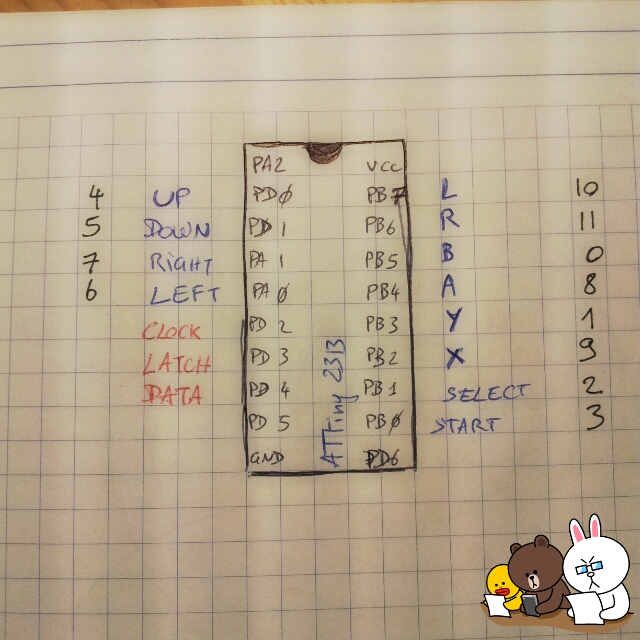
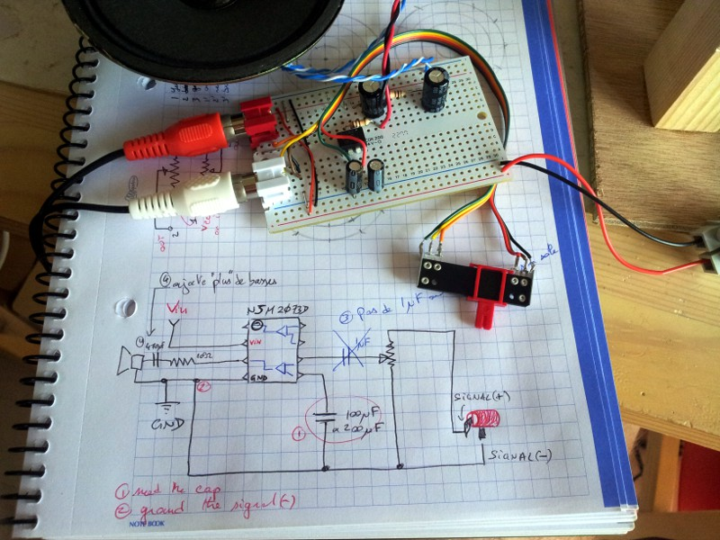
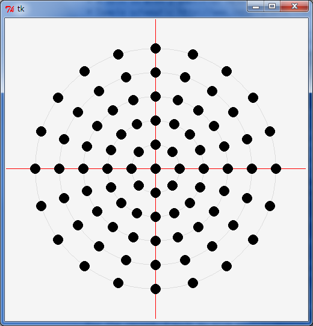

Found a SNES in the garbage
 2011-10-11 : everything is said, found a SNES in the garbage. I might reuse it as a SNES, although there is the emulator on my Wii, or (insert mad scientist laugh) use the case of the SNES for my ardPowerSwitch project and case the SNES (if working) in something else !2012-04-11 : auction on Yahoo, got a junk SNES with 2 pads and cable for about 2000 JPY (around 20 euro). A bit expensive but if I can make it revive I can sell back one of the two on internet... I can start thinking of the arcade pad... expecially since I found a small flat portable TV/DVD player in the garbage (it's working of course, I love Japan).
2012-04-27 : bought an extra video cable for 2.5 USD on ebay working fine. Bought the arcade style buttons and joystick, tested the connection to the TV (works ok)... now just have to make an arcade controller as proof of concept and we'll think of the arcade design.
2012-07-31 : well ... I left it on the side but it's not working much for now. My problem is to answer in a timely fashion to the SNES it think.
2012-08-01 : key is 1) 2 signal so use 2 interrupts pins and 2) for reading the button input status it's PINB not PORTB (used for writing status) ... (sigh) Things should move much faster now.
2012-08-02 : yeah indeed, now it's working just fine. One thing to know, doing bit masks with 16bits value can confuse the compiler. Force it to work 16bits in that case with an explicit cast. my16bit ^= (uint16_t)(1 << 7); Now I can send nicely start and right, I'll start building the housing cabinet and we're just a few solder away of the result!
2012-10-10 : finally it's working. Main issue was timing so I rewrote everything in ASM. However I had still a few issues fixed with the logic analyzer bought this week (couldn't have without it). Final error was the attiny2313 that was finally dead and did weird things all the time. Replaced with another one, it's working nicely now (^^)
Controller : SNES controller emulator with a ATtiny2313
I'll make my own one without scavenging an existing one. Finally found one guy who did it, and decided to make it my way. Controller is a Attiny2313, internal oscillator 8MHz, code in assembler.It took lots of trial and errors : with the right method took only a couple hours, but it took me months on and off to figure it out : use interrupts ! I won't detail SNES controller protocol here, check the links for that but let's settle this once and for all : the SNES reads on RISING hedge of CLOCK. My controller uses 2 interrupts plugged on LATCH (INT1 - PD3) and CLOCK (INT0 - PD2) pins, matching the following chronogram :
- LATCH goes UP then DOWN (for 12 uS) :
- uC push the first button status on the DATA wire, so that when the SNES will read, the value is already here. (on RISING hedge)
- CLOCK goes DOWN (warning to the controller to get reading):
- SNES notifies that it will read on the CLOCK RISING hedge in 6uS : do nothing (value are written on RISING in my code)
- CLOCK goes UP (SNES reads value pin):
- SNES has just read what was on the DATA
- INT0 : by the time uC reacts, reading by SNES is finished, so set the value of the next button (will take btw 4 to 9 uS : you have 12 uS before next clock rising hedge)
- do that 16x and loop 60 times a minute
Why not just redo and copy summary another guy's job ? It wouldn't have bothered me to do so if I could have said I understood what the other guy did (used chip internal USI, smart move). But honnestly that was not some job I could have redone myself, so I took the pretext to work on asm and interrupts and build up my own competence one step at a time. Now you have another way to do it, less elegant but not ugly, and working nicely.
The code is in summary reading the button status and storing the result in a word (16 bits). At the start of the sending session, use a cursor from 0 to 15, create a bit mask (1 << n) and send the status. Agreed, a few weeks after, it all seem to me a non optimized way of doing the job (not wrong, yet not appropriate with my time constraint). That's how I wrote it in C and I tried to translate it to asm... which I did, but painfully.
Just to point it out, the main challenge here was the timing. Running at about 8MHz you have 8 cycle every 1us, and between each front of the clock 6 uS (double if you cheat like I did), so it gives you at maximum 48 cycles, minus the interruption, jump, ... you better think ahead your data structure to make things fast. I learnt a lot of with that relatively simple exercise and there is still a lot to learn to make it super optimized (there's plenty of room for improvement in my code). Maybe if I make another SNES cabinet...
➮ About the timing issue, to gain a few cycle an alternative was to precalculate some data, store in SRAM, load it from SRAM. Mainly for the shifting of bit mask, since you can shift only one rank at a time (and it eats your precisous cycles). Even better, the whole status of the buttons could have been stored in a byte array in memory and read one by one too (super fast I think). But you only have those ideas once you have banged your head for weeks on the wall and finaly got it work the way you imagined at first (sigh). Next time I write such a controller, I'll use this solution (way better).

Sample chronogram : A0 is the value pin (top brown), A1 is clock (2nd from top red), A6 is latch (bottom pink)
Schematics
Wire like this :- DATA to PA1 (but could be whatever pin you want)
- LATCH to PD3 (INT1)
- CLOCK to PD2 (INT0)
- Buttons and joystick wired to other pins and GND (use the Attiny's pullups)

How I wired it, so feel free to do it your way. In blue the buttons, in red the SNES connections, the figures on the sides are in which order the data must be sent (start at 0)
Source code
Source asm code is here : http://code.google.com/p/alanarduinotools/source/browse/#svn%2Ftrunk%2FAttiny2313%2FAsmSNESPad(deprecated - the C version that has wrong timing http://code.google.com/p/alanarduinotools/source/browse/#svn%2Ftrunk%2FAttiny2313%2FAttinySNESPad)
Links
- The answer by some guy (thanks for sharing !) :
- Howto make a controller without scavenging an existing one
- Explanation (might have an error it seems) http://www.gamesx.com/controldata/nessnes.htm
- Details on the protocol http://www.gamesx.com/controldata/snesdat.htm
- A guy saying that link 1 has an error http://brainlubeonline.com/Futaba2SNES/Hardware_and_Pinout.html
- Again http://pinouts.ru/Game/snescontroller_pinout.shtml
- http://hackaday.com/2011/01/30/snes-arcade-controller/
- http://forums.benheck.com/viewtopic.php?t=35526
- http://brainlubeonline.com/Futaba2SNES/CODE.html
- Inside http://forums.benheck.com/viewtopic.php?f=23&t=35450
Sound
Need to plug those 2 RCA red and white sound to 2 speakers.Use a ＮＪＭ２０７３Ｄ double amplifier .- A 8pin IC with 2 amplifier http://akizukidenshi.com/catalog/g/gI-03594/
- Sample schematic http://www.interfacebus.com/opamp-stereo-amp-circuit-design-schematic.html

Sound diagram - the wiring of just one channel is drawn, it's same for both.
Cabinet
The cabinet details and building photos are at Around a SNES - cabinet photoroman.
7 pieces of 45x45x0.5 cm of plywood (contreplaque in French), 3 pieces of 3x2.5x200 cm of cleat (tasseau in French), some putty (mastic), sand paper, jigsaw, hammer, sweat, imagination and a few spare hours.
Schematics
- Buttons layout dedicated site : sweeet !!! http://www.slagcoin.com/joystick/layout.html
- We used one of the suggestion of the site and arranged it slightly according my local video game expert (aka the Wife)
-  Holes for the speaker : noticed that nice pattern 8-16-20-20-20-... ? Doing it with a compas is a pain but python and high school trigonometry are here for you!
Links
Maaaaaaaany people made their own, I just keep here a few reference of some of them:- Reuse of a netbook http://www.edsjunk.net/Blog/Entries/2010/12/24_Mini_Mame_Cab_from_NetBook.html
- Make an arcade controller (just the buttons) http://x2jiggy.com/blog/2012/1/1/xbox-pc-arcade-joystick.html
About the power
This is valid only about the Japanese version of the SNES or Super Famicom as it's called here. It was not present with my discovery in the garbage, so I had to find one. Can grab it for 1000 jpy second hand, or make your own :- Power consumption 18 VA
- Output : DC 10 V 850 mA (can be anything 9-12V as long as it can spit 1A)
- Plug is center negative
Edit 1 : with the LM317
For the record, I made my alim with a LM317 and my first version was a failure. Although the output should have been 10 v I had something like 12v and using a faulty game made the console blow its fuse (I seem cool by speaking of it now but believe me I was afraid). Replaced the fuse (the black stuff right next to the alim) by a PTC with roughly same characteristics (it's not as good but it will do the trick) taught me also that it's good ol' 5v inside thanks a little 7805 well visible next to the fuse. And I'm using a creepy wallwart full of spikes but it's also something I got from the garbage so let's continue in the recycle mood. Just limit the voltage and add big fat caps before and after the LM317 to smooth the output.I fixed my alim adding 2 serial diodes, now I'v 10.5 v input and the console is working just fine (never put that faulty game again inside).
Oh and it's getting quite hot ! The radiator is a must.
Edit 2 : with a L7809
I thought that using a L7809 instead of a LM317 will give me a better voltage, less power loss, less components and less heat. Well, for sure there's less components and a very nice 9V but OMG what the F%%% how the regulator is hot !! I put a big radiator on it and still it's barely touchable after 5 minutes. According reading on the net it must go up to maybe 50-60 C (after that you can't touch/stay touching).... I think I will add a few holes for air to go through the case.Various links
Shopping
- THE site in Japan to buy arcade style buttons (189 JPY each, 1.7 euro) http://www.rakuten.co.jp/sanwadenshi/
Misc
- Make it white again ! http://retr0bright.wikispaces.com/
- How to open it without buying the skewdrivers http://www.engadget.com/2006/11/18/mini-how-to-make-a-tool-to-breach-nintendos-security-screws/
- Open it http://edramatech.wordpress.com/how-to-open-an-snes-or-other-nintendo-console/
- General lots of tips about console modding http://kyorune.com/modding/showcat.php?cat=snes_modding